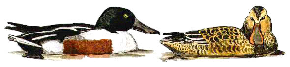

Shoveler
A common winter visitor to the reservoir. They used to breed, but now are generally not seen in the 4 months from May to August.

1929 - "Breeds regularly". 2 pairs this year.
15/06/30 - Seen with young.
20/03/32 - Single male.
01/04/33 - 6 birds.
30/01/35 - Single male & 2 females.
No records between 1935 & 1952.
20/12/53 - 5 birds.
24/01/54 - 30 birds approx. Record count to date.
04/04/63 - Pair mating.
23/01/64 - 9 birds.
06/04/67 - Single male.
16/11/67 - Maximum count of 4 birds.
04/04/69 - Maximum count of 7 birds.
1970 - Up to 14 wintering.
??/04/71 - 1 or 2 pairs.
??/11/71 - Up to 5 birds.
06/04/72 - 2 birds. Seen again on 28/04.
17/12/72 - 5 birds.
1973 - Up to 20 birds between February & April.
17/10/74 - Maximum count of 18 birds.
??/04/75 - 15 birds.
??/12/75 - Maximum count of 21 birds.
??/02/76 - Maximum count of 20 birds.
??/10/76 - 6 birds.
11/02/78 - Maximum count of 12 birds.
01/01/79 - Maximum count of 10 birds.
1979 - 5 birds between October & December.
02/02/80 - Maximum count of 23 birds.
16/03/80 - 15 birds.
12/12/81 - 10 birds.
1984 - Generally less than 10 birds, except for 13 birds in April.
28/12/86 - 7 birds.
28/03/87 - 2 birds. Remained until 04/04.
15/11/87 - 10 birds.
06/12/87 - Maximum count of 11 birds.
08/02/88 - Maximum count of 23 birds.
11/03/89 - 8 males & a female.
08/12/90 - 10 birds. (5pairs).
26/12/90 - Maximum count of 18 birds.
03/02/91 - 6 birds.
23/12/91 - Maximum count of 11 birds. 7 males & 4 females.
1992 - Maximum count of 19 birds, present until March.
29/12/92 - 11 birds.
01/01/93 - 3 birds.
04/12/93 - Pair.
14/01/94 - 2 males.
02/10/94 - Pair.
30/10/94 - 2 birds.
24/12/94 - 2 males.
12/11/95 - 2 males & a female.
27/01/96 - 3 birds.
15/11/96 - Maximum count of 11 birds.
??/12/96 - 10 birds.
28/01/97 - Maximum count of 9 birds.
27/10/97 - 6 birds.
24/02/98 - Single male. Remained until 01/03.
01/04/98 - 3 pairs.
06/09/98 - 2 males.
21/09/98 - Maximum count of 6 birds.
30/10/98 - 5 birds.
10/01/99 - Pair. 3 birds on 11/01.
22/02/99 - 3 males & a female.
24/09/99 - 4 birds.
18/10/99 - Maximum count of 23 birds.
2000 - 1 to 3 recorded in each of the first 5 months, none through the 3 summer months then seen daily through September and October with monthly maximums of 5 on 21/09 and 21 on 21/10. Up to 5 seen on 7 dates through November and December.
2001 - 79 records this year with a maximum count of 29, the highest count since 1954. 3 on 19/01 then apart from 1 the next day none until 1 on 11/08, then seen almost daily from 25/08 to the end of the year. Monthly maximums of 9 on 31/08, 14 on 02/09, 20 on 30/10, 29 on 17/11 and 26 on 02/12.
2002 - 45 records this year with maximums of 20 on 01/01 and 11 on 13/10. None seen from April to July and none in December.
2003 - 66 records this year. None seen from April to July. Highest counts were 15 on 05/11 and 21 on 06/12.
2004 - 54 records, None in February, May, June or August. Mostly 1 to 5 birds, but increasing at the end of November with peaks of 12 on 30/11 and 16 on 24/12 and 27/12.
2005 - 91 records this year, yet still no birds from May through until the second week in September. The maximum count was 18 birds on 27/03.
2006 - 31 records with max of 16 on 06/04.
2007 - 32 records - none through the summer, with max of 5 on several dates.
2008 - 50 records - max of 8 on 12/12/08
2009 - 29 records - max 10 on 11/01/09 in freezing weather
2010 - 26 records - max 11 on 17/11
2011 - 15 records of up to 4 birds, a poor year
2012 - 22 records of up to 5 birds. A pair seen mating on 08/03
2013 - 17 records of up to 4 birds
2014 - 25 records of up to 4 birds
2015 - 4 records of up to 4 birds
2016 - 84 records of up to 14 birds, but none in May, June, July and August
2017 - 57 records of up to 18 birds - 18 on 23/01, best count for 12 years
2018 - 23 records of up to 16 birds - 16 on 30/01
2019 - 25 records of up to 13 birds - 13 on 08/12
2020 - 40 records of up to 5 birds. 5 on 08/11
2021 - 11 records of up to 3 birds
2022 - 35 records of up to 6 birds
2023 - 15 records of up to 7 birds
2024 - 17 records of up to 6 birds
2025 - 17 records of up to 5 birds